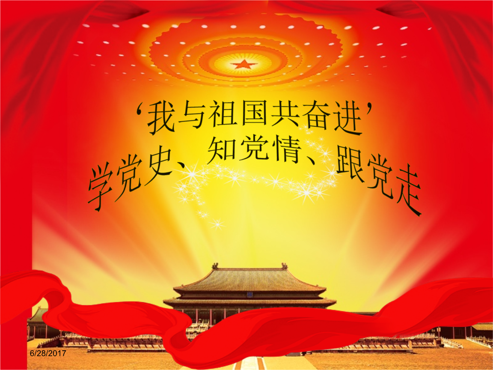
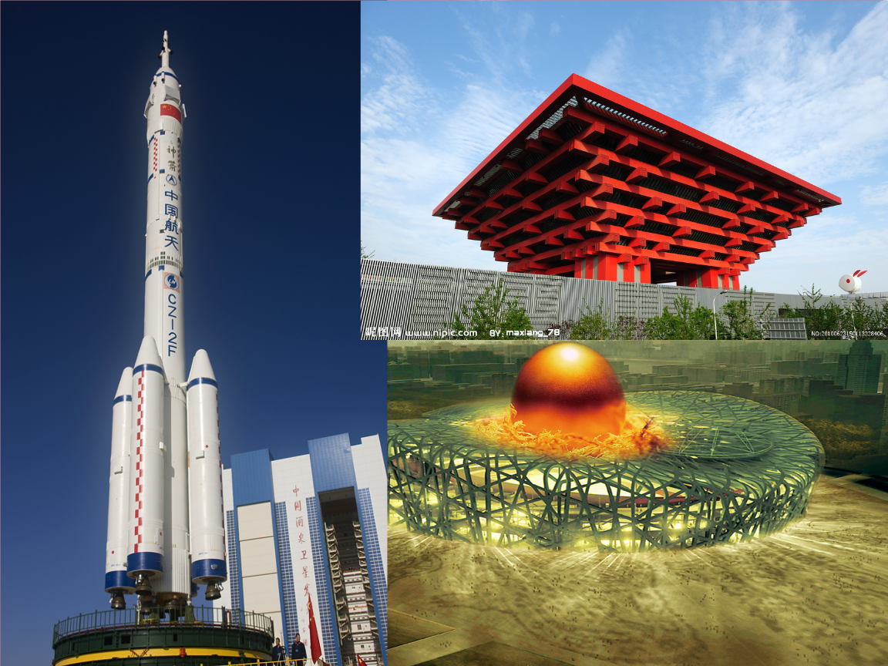
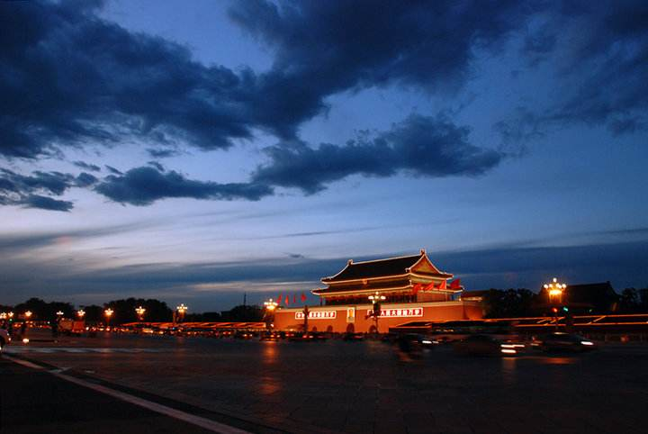
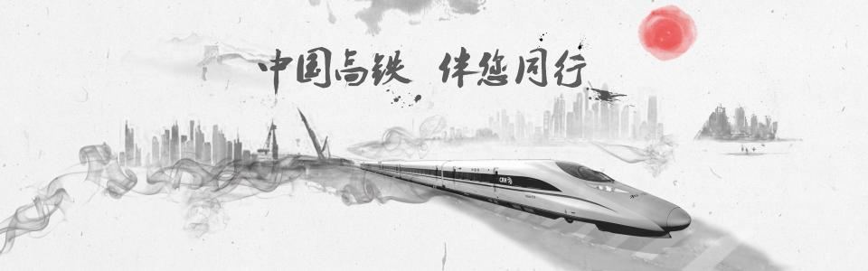

五千载峥嵘厚重，七十年锐意新光。岁月漫漫，我们与祖国互相提携，一路行来，每一步共同走过，每一梦共同畅想。中经风雨飘摇，举足维艰，幸而初心未改，时至今日我们依然与国同梦

少年富则国富少年强，则国强我们的祖国从清末的被蹂躏到现在的发展蒸蒸日上，是无数的中华儿女抛头颅、洒热血、前仆后继、不懈努力换来的,来之不易啊可.他们开创了祖国的今天，我们就要造就祖国的明天.现在,祖国还属于发展中国家，我们如果和欧洲的那些经济强国比还有一些距离,只有我们不断的进步,才能逐渐的缩短这个距离.作为一名中学生，为了实现我们的光荣使命，我们必须努力学习,用最先进的科学技术和人类的灿烂文化武装自己，学好建设祖国的本领明天在自己的工作岗位上为祖国建设贡献聪明才智。

如果说，海水和火焰是生活的分娩，一半堕落，一半升腾。那光明与黑暗就是一对陌生的亲兄弟，在矛盾中相拥，在分离中决裂。可祖国母亲不这么认为，万物都是她的孩子，我的祖国用她那颗包容的柔软心化解这纷乱的定义。

在人类历史长河中，70年弹指一挥间。1840年鸦片战争后的100多年里，中国频遭侵略和蹂躏之害、饱受战祸和动乱之苦。新中国成立以来的70年是改变中华民族前途命运的70年，是沿着民族复兴之路奋勇前行的70年。新中国70年是史诗般的历史进程。在中国共产党领导下，我们筚路蓝缕，辟除榛莽，一路走来，走向辉煌，走向复兴。
实现民族独立、人民解放，是走向民族复兴的前提。中华人民共和国的成立，彻底结束了中华民族100多年的屈辱历史，实现了中国人民最迫切、最深沉的愿望，中华民族获得了历史性新生。从此，中国人民将命运牢牢掌握在自己手中。毛泽东同志自豪地宣告：“中国必须独立，中国必须解放，中国的事务必须由中国人民自己作主张，自己来处理，不容许任何帝国主义国家再有一丝一毫的干涉。”
